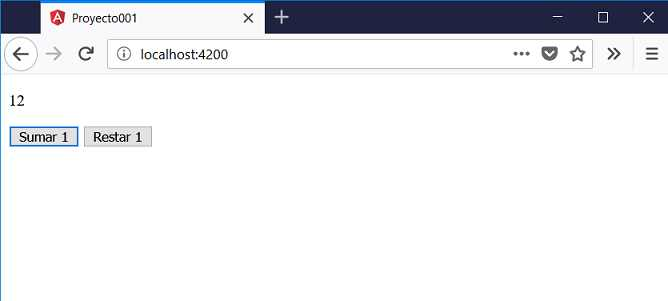

6 - Captura de eventos
Otra actividad muy común en una aplicación es la captura de eventos. La presión de un botón, la presión de una tecla, el desplazamiento de la flecha del mouse etc. son eventos que podemos capturar.
El evento más común que podemos encontrar en cualquier aplicación es la presión de un botón. Modificaremos nuevamente el proyecto001 para que la componente AppComponent muestre un etiqueta con un número 0 y luego dos botones que permitan incrementar o decrementar en uno el contenido de la etiqueta.
Nuevamente debemos modificar el archivo 'app.component.ts' con el siguiente código:
import { Component } from '@angular/core';
@Component({
selector: 'app-root',
templateUrl: './app.component.html',
styleUrls: ['./app.component.css']
})
export class AppComponent {
contador = 1;
incrementar() {
this.contador++;
}
decrementar() {
this.contador--;
}
}
Definimos en la clase la propiedad 'contador' y lo iniciamos con el valor '1':
export class AppComponent {
contador = 1;
Luego otros dos métodos de la clase AppComponent, que serán llamados al presionar alguno de los botones, incrementan en uno o decrementan en uno el valor almacenado en la propiedad contador:
incrementar() {
this.contador++;
}
decrementar() {
this.contador--;
}
Recordar que las propiedades dentro de los métodos debemos anteceder la palabra clave 'this'
El segundo archivo donde se encuentra la vista de la componente es app.component.html:
<div>
<p>{{contador}}</p>
<button (click)="incrementar()">Sumar 1</button>
<button (click)="decrementar()">Restar 1</button>
</div>
Como ya conocemos mostramos el contenido de la propiedad contador mediante interpolación de string:
<p>{{contador}}</p>
Luego definimos dos elementos HTML de tipo 'button' y definimos los eventos click (deben ir entre paréntesis los nombres de los eventos) y luego entre comillas el nombre del método que se llama:
<button (click)="incrementar()">Sumar 1</button> <button (click)="decrementar()">Restar 1</button>
Ejecutemos nuestra aplicación desde la línea de comandos de Node.js:

En el navegador aparece la siguiente interfaz:
Cuando se presiona el botón 'Sumar 1' se llama el método 'incrementar()', en dicho método si recordamos se modifica el contenido de la propiedad 'contador':
incrementar() {
this.contador++;
}
Lo más importante notar que Angular detecta cuando se modifican valores almacenados en propiedades y automáticamente se encarga de actualizar la interfaz visual sin tener que llamar a algún método.
Este concepto se conoce como 'binding' en una dirección (cambio en atributos de la clase se actualizan en la vista)